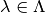
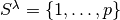
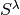
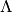
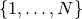
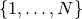
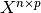
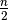
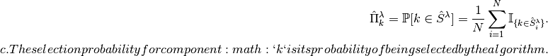
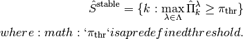

Welcome to stability-selection’s documentation!¶
1 This project contains an implementation of the stability selection algorithm.
Stability selection is a technique that aims to enhance and improve existing feature selection algorithms. For a generic feature selection algorithm, we have a tuning parameter  that controls the amount of regularisation. Examples of such algorithms are:
 -penalized regression (penalization parameter
-penalized regression (penalization parameter  ).
).- Orthogonal matching pursuit (number of steps in forward selection).
- Boosting ( penalty)
These structure learning algorithms have in common is a parameter
that controls the amount of regularisation. For every value of , we obtain a structure
estimate , which indicates which variables to select. We are
interested to determine whether there exists a such that  is identical to
 with high probability, and how to achieve the right amount of regularisation.
with high probability, and how to achieve the right amount of regularisation.
Sability selection works as follows:
Define a candidate set of regularization parameters  and a subsample number
 .
.For each value do:
For each
 in , do:
in , do:- Generate a bootstrap sample of the original data  of size .
- Run the selection algorithm (LASSO) on the bootstrap sample with regularization parameter .
Given the selection sets from each subsample, calculate the empirical selection probability for each model component:

- Given the selection probabilities for each component and for each value of , construct the
stable set according to the following definition:

This algorithm identifies a set of “stable” variables that are selected with high probability.
See the README for more information.